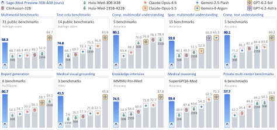
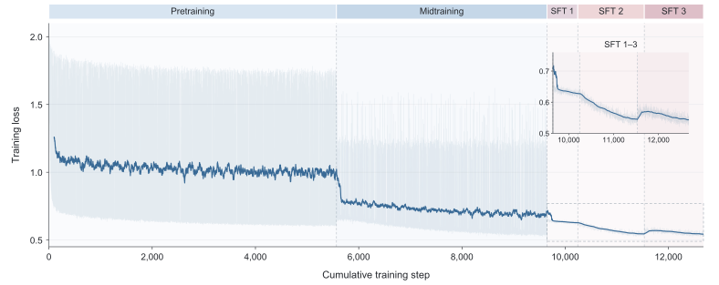

Sage-Med: Scaling Medical Multimodal Intelligence
A medical vision–language model for image interpretation, clinical reasoning, and report generation.
Shanghai Artificial Intelligence Laboratory


Training pipeline
Continual pretraining
Learn medical image–text associations from 83.8M records.
Task-oriented mid-training
Introduce medical questions and reasoning tasks using 28.1M records.
Supervised fine-tuning
Align instructions, diversify tasks, then refine harder examples.
Adaptive reinforcement learning
Adjust task difficulty as the model’s answers improve.
Training loss

Evaluation coverage
Explore the leaderboard77 comparison models
68 open-source9 proprietary
74 benchmarks
61 public13 private
- Clinical tasks
- 238
- Modalities
- 40+
- Hospitals and institutions in the private evaluation
- 14